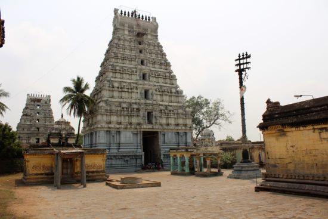

VILLUPURAM
SRI ABIRAMESHWARAR TEMPLE

Abirameswarar Temple (also called Thiruvamathur Temple) is a Hindu temple dedicated to the deity Shiva, located in thiruvamaathur, a village in Viluppuram district in the South Indian state of Tamil Nadu.
Shiva is worshiped as Abirameswarar, and is represented by the lingam. His consort Parvati is depicted as Manonmani Amman.
The temple is located on the Chennai - Villupuram highway. The presiding deity is revered in the 7th century Tamil Saiva canonical work, the Tevaram, written by Tamil saint poets known as the nayanmars and classified as Paadal Petra Sthalam.